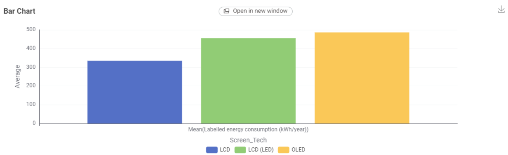
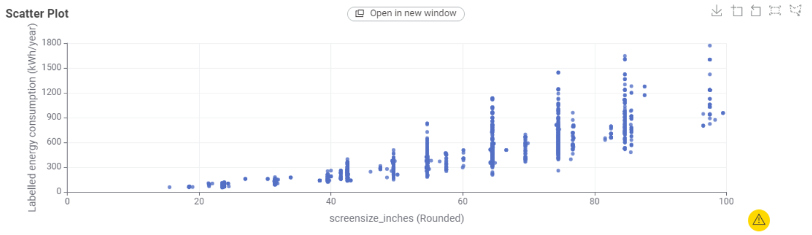
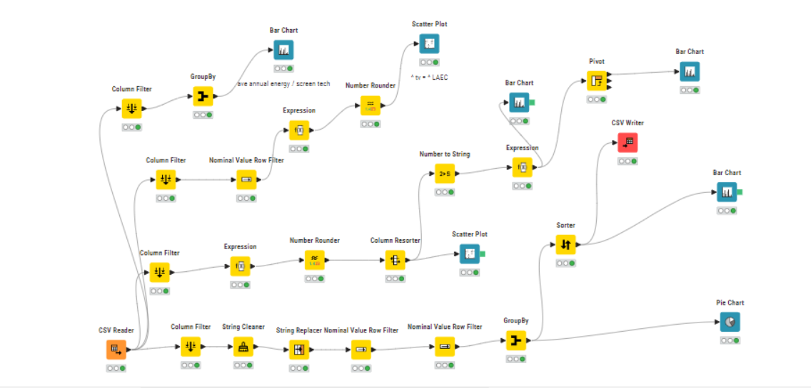

TV ENERGY STORY
What makes a TV power hungry?
Two things stand out in the data: how big the screen is and what screen technology it uses. Here is what that means for your power bill.
Who is this for?
This page is written for Australian households who are about to buy a new television and want to know which choices will cost more to run over the year.
Energy use is shown as the labelled energy consumption in kilowatt-hours per year (kWh/year), as published for each TV model in the dataset. Lower is cheaper to run.
1. Screen technology matters
We grouped every TV in the dataset by screen technology and averaged their labelled yearly energy consumption.

Key point: On average, OLED TVs use the most energy (about 487 kWh/year), LCD (LED) sits in the middle (about 455) and standard LCD uses the least (about 335).
Averages hide a lot though. A technology that uses more on average might still have efficient models, and these groups will contain different screen sizes (see the next chart).
2. Bigger screens use more energy
Each dot below is one TV model. Screen sizes are rounded to the nearest inch band so models of similar size line up in columns.

Key point: Energy use climbs steadily with screen size. Small TVs (under 30 inches) mostly sit below about 150 kWh/year, while the biggest models can exceed 1,500.
The vertical spread also grows with size. Among TVs of the same size, yearly energy use can differ by several hundred kWh, so comparing the energy label on same-sized models is worth the effort.
What should you do?
Buy the smallest screen you will be happy with. Size is the biggest driver of energy use in this data.
Compare labelled kWh/year between models of the same size and technology.
Use the calculator to turn a TV's wattage and daily viewing hours into a running cost.
How we made these charts
Both charts were produced in KNIME from the TV energy consumption dataset: columns were filtered, rows with missing screen technology were removed, and values were grouped (for the bar chart) or rounded (for the scatter plot).
Show the KNIME workflow
